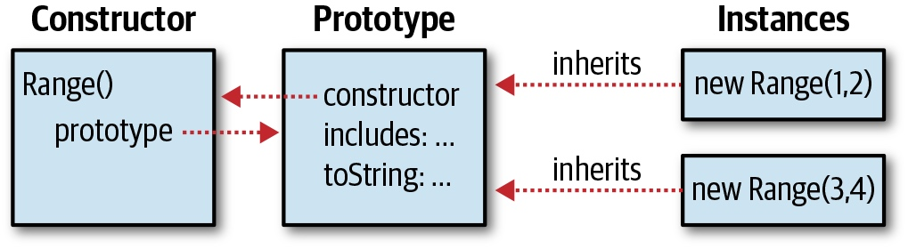

第 9 章 类
第 6 章详细介绍了 JavaScript 对象，每个 JavaScript 对象都是一个属性集合，相互之间没有任何联系。在 JavaScript 中也可以定义对象的类，让每个对象都共享某些属性，这种“共享”的特性是非常有用的。类的成员或实例都包含一些属性，用以存放或定义它们的状态，其中有些属性定义了它们的行为（通常称为方法）。这些行为通常是由类定义的，而且为所有实例所共享。例如，假设有一个名为 Complex 的类用来表示复数，同时还定义了一些复数运算。一个 Complex 实例应当包含复数的实部和虚部（状态），同样 Complex 类还会定义复数的加法和乘法操作（行为）。
在 JavaScript 中，类的实现是基于其原型继承机制的。如果两个实例都从同一个原型对象上继承了属性，我们说它们是同一个类的实例。JavaScript 原型和继承在 §6.2.3 和 §6.3.2 节中有详细讨论，为了更好地理解本章的内容，请务必首先阅读这两个章节。本章将会在 §9.1 中对原型做进一步讨论。
如果两个对象继承自同一个原型，往往意味着（但不是绝对）它们是由同一个构造函数创建并初始化的。我们已经在 §4.6、§6.2.2 和 §8.2.3 节中详细讲解了构造函数，§9.2 会有进一步讨论。
JavaScript 一直允许定义类。ES6 引入了全新的语法（包括 class 关键字），使创建类更加容易。这些新的 JavaScript 类的工作方式与旧式类相同，本章首先解释创建类的旧方法，因为这更清楚地展示了类是如何工作的。一旦我们解释了这些基本原理，我们将改变并开始使用新的、简化的类定义语法。
如果你对诸如 Java 和 C++ 这种强类型的面向对象编程比较熟悉，你会发现 JavaScript 中的类和 Java 以及 C++ 中的类有很大不同。尽管在写法上类似，而且在 JavaScript 中也能“模拟”出很多经典的类的特性，但是最好要理解 JavaScript 的类和基于原型的继承机制，以及和传统的 Java（当然还有类似 Java 的语言）的类和基于类的继承机制的不同之处。
9.1 类和原型
在 JavaScript 中，类的所有实例对象都从同一个原型对象上继承属性。因此，原型对象是类的核心。在示例 6-1 中定义了 inherit() 函数，这个函数返回一个新创建的对象，后者继承自某个原型对象。如果定义一个原型对象，然后通过 inherit() 函数创建一个继承自它的对象，这样就定义了一个 JavaScript 类。通常，类的实例还需要进一步的初始化，通常是通过定义一个函数来创建并初始化这个新对象，参照示例 9-1。示例 9-1 给一个表示“值的范围”的类定义了原型对象，还定义了一个“工厂”函数用以创建并初始化类的实例。
示例 9-1：一个简单的 JavaScript 类
// This is a factory function that returns a new range object.
function range(from, to) {
// Use Object.create() to create an object that inherits from the
// prototype object defined below. The prototype object is stored as
// a property of this function, and defines the shared methods (behavior)
// for all range objects.
let r = Object.create(range.methods);
// Store the start and end points (state) of this new range object.
// These are noninherited properties that are unique to this object.
r.from = from;
r.to = to;
// Finally return the new object
return r;
}
// This prototype object defines methods inherited by all range objects.
range.methods = {
// Return true if x is in the range, false otherwise
// This method works for textual and Date ranges as well as numeric.
includes(x) { return this.from <= x && x <= this.to; },
// A generator function that makes instances of the class iterable.
// Note that it only works for numeric ranges.
*[Symbol.iterator]() {
for(let x = Math.ceil(this.from); x <= this.to; x++) yield x;
},
// Return a string representation of the range
toString() { return "(" + this.from + "..." + this.to + ")"; }
};
// Here are example uses of a range object.
let r = range(1,3); // Create a range object
r.includes(2) // => true: 2 is in the range
r.toString() // => "(1...3)"
[...r] // => [1, 2, 3]; convert to an array via iterator
在示例 9-1 的代码中有一下几点值得注意：
这段代码定义了一个工厂函数 range() 用来创建一个新的 Range 对象。
用 range() 函数的 methods 属性来存放定义类的原型对象。只是将原型对象随意的放在一个地方，并不是一个规约或者习惯。
range() 函数在每个 Range 对象中都定义 from 和 to 属性。它们是非共享、非继承属性，是每个独立的 Range 对象的独特自有状态。
range.methods 对象应用了 ES6 的速记语法来定义方法，这是为什么没有看到 function 关键字的原因。（参照 §6.10.5 来复习对象字面量速记方法语法。）
原型中的一个方法 Symbol.iterator 使用了计算属性名（§6.10.2），表明它是为 Range 对象定义一个迭代器。方法名称带有一个前缀 *，标识它是一个生成器函数而不是普通的函数。迭代器和生成器在第 12 章会详细描述。现在，只需要知道 Range 类的实例可以用 for/of 循环和可以用 ... 展开运算符。
定义在 range.methods 中的共享继承方法都使用在 range() 工厂函数初始化的 from 和 to 属性。在这些方法被调用时，为了引用 from 和 to 属性，都使用 this 关键字来获取对象的引用。this 这种用法是任何类中方法的基本特征。
9.2 类和构造函数
示例 9-1 展示了一个简单方式来定义一个 JavaScript 类。但是这种方法并不常用，因为它没有定义一个构造函数。构造函数是用来初始化新建对象的。如 §8.2.3 中所述构造函数用 new 关键字来调用。使用 new 调用构造函数会自动创建一个新对象，因此构造函数本身只需初始化这个新对象的状态即可。§6.2.3 介绍并强调了虽然所有对象都有原型，但是只有一部分对象有一个 prototype 属性。最后，我们可以澄清这一点：是函数对象具有 prototype 属性。这意味着所有用同一构造函数创建的对象继承同一个对象，因此它们是同一类的成员。示例 9-2 说明了如何使用一个构造函数来替代示例 9-1 中的工厂函数来修改 Range 类。示例 9-2 演示了在不支持 ES6 class 关键字版本的 JavaScript 中创建一个类的通用方法。即使是 class 已经很好支持的今天，仍然有很多旧 JavaScript 代码用这种方式定义类，并且你必须熟悉这种习惯用法，以便于阅读旧代码，也能够在使用 class 关键字时明白在底层中发生了什么。
示例 9-2：使用构造函数的 Range 类
// This is a constructor function that initializes new Range objects.
// Note that it does not create or return the object. It just initializes this.
function Range(from, to) {
// Store the start and end points (state) of this new range object.
// These are noninherited properties that are unique to this object.
this.from = from;
this.to = to;
}
// All Range objects inherit from this object.
// Note that the property name must be "prototype" for this to work.
Range.prototype = {
// Return true if x is in the range, false otherwise
// This method works for textual and Date ranges as well as numeric.
includes: function(x) { return this.from <= x && x <= this.to; },
// A generator function that makes instances of the class iterable.
// Note that it only works for numeric ranges.
[Symbol.iterator]: function*() {
for(let x = Math.ceil(this.from); x <= this.to; x++) yield x;
},
// Return a string representation of the range
toString: function() { return "(" + this.from + "..." + this.to + ")"; }
};
// Here are example uses of this new Range class
let r = new Range(1,3); // Create a Range object; note the use of new
r.includes(2) // => true: 2 is in the range
r.toString() // => "(1...3)"
[...r] // => [1, 2, 3]; convert to an array via iterator
将示例 9-1 和示例 9-2 中的代码做一个仔细的对比，可以发现两种类定义技术的差别。首先，注意当工厂函数 range() 转化为构造函数时被重命名为 Range()。这里遵循了一个常见的编程约定：从某种意义上讲，定义构造函数即是定义类，并且类名首字母要大写。而普通的函数和方法都是首字母小写。
再者，注意 Range() 构造函数是通过 new 关键字调用的（在示例代码的末尾）， 而 range() 工厂函数则不必使用 new。示例 9-1 通过调用普通函数（§8.2.1）来创建新对象，示例 9-2 则使用构造函数调用（§8.2.3）来创建新对象。由于 Range() 构造函数是通过 new 关键字调用的，因此不必调用 Object.create() 或其他什么逻辑来创建新对象。在调用构造函数之前就已经创建了新对象，并且通过 this 关键字可以获取这个新对象。Range() 构造函数只不过是初始化 this 而已。构造函数甚至不必返回这个新创建的对象，构造函数会自动创建对象，然后将构造函数作为这个对象的方法来调用一次，最后返回这个新对象。构造函数调用与常规函数调用如此不同，实际上，这是我们为构造函数命名以大写字母为名的另一个原因。构造函数就是用来“构造新对象”的，它必须通过关键字 new 调用，如果将构造函数用做普通函数的话，往往不会正常工作。开发者可以通过命名规约来（构造函数首字母大写，普通方法首字母小写）判断是否应当在函数之前冠以关键字 new。
构造函数和 new.target
在函数正文中，可以使用特殊的表达式 new.target 来判断函数是否以构造函数的方式调用。如果定义了该表达式的值，那么这个函数是通过 new 关键字调用的构造函数。当我们在 §9.5 中讨论子类时，我们会看到 new.target 不总是其所在的构造函数的引用：它可能还引用子类的构造函数。
如果 new.target 是 undefined，那么包含它的函数是作为函数调用的，没有使用 new 关键字。JavaScript 很多异常构造函数可以不使用 new 来调用，如果想模仿这个特性可以这样写：
function C() {
if (!new.target) return new C();
// initialization code goes here
}
这个老式技巧只在构造函数定义时生效。类使用 class 关键字创建，不允许不使用 new 调用它的构造函数。
示例 9-1 和 9-2 之间的另一个关键区别是原型对象的命名方式。在第一个示例中，原型是 range.methods。这是一个方便和描述性的名称，但随意。在第二个示例中，原型为 Range.prototype，此名称是规定的。Range() 构造函数的调用自动使用 Range.prototype 作为新 Range 对象的原型。
最后，还要注意示例 9-1 和 9-2 之间不变的部分：对两个类来说，range 方法以相同的方式定义和调用。由于示例 9-2 演示了在 ES6 之前在 JavaScript 版本中创建类的惯用方法，因此它没原型对象中使用 ES6 速记方法语法，并且使用 function 关键字显式拼出方法名。但是，可以看到，在这两个示例中，方法的实现是相同的。
请注意，在定义构造函数或方法时，两个 range 示例都没使用箭头函数。回想一下，从 §8.1.3 中，用这种方式定义的函数没有原型属性，因此不能用作构造函数。此外，箭头函数从定义它们的上下文中继承 this 关键字，而不是基于调用它们的对象设置 this 值，这使得箭头函数对方法毫无用处，因为方法的定义特征是方法使用 this 关键字来引用调用方法的实例。
幸运的是，新的 ES6 类语法不允许使用 arrow 函数定义方法，因此这不是使用该语法时可能会意外犯的错误。我们将很快介绍 ES6 类关键字，但首先，有更多关于构造函数的详细信息。
9.2.1 构造函数、类标识和 instanceof
正如我们所看到的，原型对象是类的基本标识：只有两个对象继承同一原型对象时，这两个对象是同一类实例。构造函数的关键点不是初始化新创建对象的状态：两个构造函数可能具有指向同一原型对象的原型属性。那么，两个构造函数都可用于创建同一类的实例。
尽管构造函数不像原型那样重要，但是构造函数充当 class 的大众脸。最明显的是，构造函数的名称通常用作类的名称。例如，我们说 Range() 构造函数创建 Range 对象。然而，更重要的是测试类中对象的成员关系，构造函数在右边被用作 instanceof 运算符的操作数。如果有一个对象 r，并且想知道它是不是一个 Range 对象，可以这样写：
r instanceof Range // => true: r inherits from Range.prototype
instanceof 运算符在 §4.9.4 中有描述。左边的操作数是想要测试的对象，右边的操作数是命名类的构造函数。表达式 o instanceof C 计算结果为 true 时，o 继承自 C.prototype。不需要直接继承：如果 o 继承于一个继承了 C.prototype 的对象，表达式的计算结果也仍会是 true。
从技术上讲，在上一个代码示例中，instanceof 运算符的实例没有检查 r 是否实际由 Range 构造函数初始化。相反，它是检查 r 是否继承 Range.prototype。如果我们定义一个函数 Strange() 并将其原型设置与 Range.prototype 相同，则使用新 Strange() 创建的对象用 instanceof 运算符将算作 Range 对象（但是，它们实际上不会作为 Range 对象工作，因为它们的 from 和 to 属性尚未初始化）：
function Strange() {}
Strange.prototype = Range.prototype;
new Strange() instanceof Range // => true
实际上即使 instanceof 不能验证使用了构造函数，它仍然使用构造函数作为其右侧，因为构造函数是类的公共标识。
如果要为特定原型测试对象的原型链，并且不想将构造函数用作媒介，可以使用 isPrototypeOf() 方法。例如，在示例 9-1 中，我们定义了一个没有构造函数的类，因此无法将 instanceof 与该类一起使用。但是，我们可以测试对象 r 是否是具有此代码的无构造函数类的成员：
range.methods.isPrototypeOf(r); // range.methods is the prototype object.
9.2.2 constructor 属性
在示例 9-2 中，将 Range.prototype 定义为一个新对象，这个对象包含类所需要的方法。其实没有必要新创建一个对象，用单个对象字面量的属性就可以方便地定义原型上的方法。任何普通 JavaScript 函数（除箭头函数、生成器函数和异步函数之外）都可以用做构造函数，并且调用构造函数是需要一个 prototype 属性的。因此，每个 JavaScript 函数都自动拥有一个 prototype 属性。这个属性的值是一个对象，这个对象包含唯一一个不可枚举属性 constructor。constructor 属性的值是一个函数对象：
let F = function() {}; // This is a function object.
let p = F.prototype; // This is the prototype object associated with F.
let c = p.constructor; // This is the function associated with the prototype.
c === F // => true: F.prototype.constructor === F for any F
可以看到构造函数的原型中存在预先定义好的 constructor 属性，这意味着对象通常继承的 constructor 是它们的构造函数的引用。由于构造函数是类的“公共标识”， 因此这个 constructor 属性为对象提供了类。
let o = new F(); // Create an object o of class F
o.constructor === F // => true: the constructor property specifies the class
如图 9-1 所示，图 9-1 展示了构造函数和原型对象之间的关系，包括原型到构造函数的反向引用以及构造函数创建的实例。
图 9-1：构造函数，原型，实例

需要注意的是，图 9-1 用 Range() 构造函数作为示例。但实际上，示例 9-2 中定义的 Range 类使用它自身的一个新对象重写了预定义的 Range.prototype 对象。这个新定义的原型对象不含有 constructor 属性。因此 Range 类的实例也不含有 constructor 属性。我们可以通过补救措施来修正这个问题，显式给原型添加一个构造函数：
Range.prototype = {
constructor: Range, // Explicitly set the constructor back-reference
/* method definitions go here */
};
另一种常见的解决办法是使用预定义的原型对象，预定义的原型对象包含 constructor 属性，然后依次给原型对象添加方法：
// Extend the predefined Range.prototype object so we don't overwrite
// the automatically created Range.prototype.constructor property.
Range.prototype.includes = function(x) {
return this.from <= x && x <= this.to;
};
Range.prototype.toString = function() {
return "(" + this.from + "..." + this.to + ")";
};
9.3 使用 class 关键字的类
类自第一个版本以来一直是 JavaScript 的一部分，但在 ES6 中，它们最终引入 class 关键字得到了自己的语法。示例 9-3 显示了使用此新语法编写 Range 类的实现。
示例 9-3：使用 class 编写 Range 类
class Range {
constructor(from, to) {
// Store the start and end points (state) of this new range object.
// These are noninherited properties that are unique to this object.
this.from = from;
this.to = to;
}
// Return true if x is in the range, false otherwise
// This method works for textual and Date ranges as well as numeric.
includes(x) { return this.from <= x && x <= this.to; }
// A generator function that makes instances of the class iterable.
// Note that it only works for numeric ranges.
*[Symbol.iterator]() {
for(let x = Math.ceil(this.from); x <= this.to; x++) yield x;
}
// Return a string representation of the range
toString() { return `(${this.from}...${this.to})`; }
}
// Here are example uses of this new Range class
let r = new Range(1,3); // Create a Range object
r.includes(2) // => true: 2 is in the range
r.toString() // => "(1...3)"
[...r] // => [1, 2, 3]; convert to an array via iterator
重要的是要了解，在示例 9-2 和 9-3 中定义的类的工作方式完全相同。将 class 关键字引入语言并不会改变 JavaScript 基于原型的类的基本性质。尽管示例 9-3 使用 class 关键字，但生成的 Range 对象是一个构造函数，就像示例 9-2 中定义的版本一样。新的 class 语法更清洁方便，但是最好将其看作示例 9-2 所示的基本类定义机制的语法糖。
注意在示例 9-3 中关于 class 语法的一下几点：
用 class 关键字声明类，后面接一个类名，最后是花括号包含类的正文。
类正文包括使用对象字面量方法速记定义的方法（我们在示例 9-1 中也使用了），其中省略了函数关键字。但是，与对象字面量不同，没有用逗号将方法彼此分开。（虽然类正文表面上与对象字面量相似，但它们不是一回事。与对象不同，类不支持具有名/值对的属性的定义。
关键字 constructor 用于定义类的构造函数。但是，定义的函数实际上并不命名为 constructor。类声明语句定义一个新的变量 Range，并将此特殊构造函数的值分配给该变量。
如果类不需要执行任何初始化，可以省略构造函数关键字及其正文，并将隐式创建一个空构造函数。
如果要定义子类（或继承来自另一个类的类），可以使用 extends 关键字与 class 关键字：
// A Span is like a Range, but instead of initializing it with
// a start and an end, we initialize it with a start and a length
class Span extends Range {
constructor(start, length) {
if (length >= 0) {
super(start, start + length);
} else {
super(start + length, start);
}
}
}
创建子类是完整的一节。我们将在 §9.5 重新讲到它，并解释这里的 extends 和 super 关键字。
与函数声明一样，类声明同时具有语句和表达式形式。正如我们可以写：
let square = function(x) { return x * x; };
square(3) // => 9
we can also write:
let Square = class { constructor(x) { this.area = x * x; } };
new Square(3).area // => 9
与函数定义表达式一样，类定义表达式可以包含可选类名。如果提供这样的名称，则该名称仅在类正文本身中有定义。
尽管函数表达式很常见（尤其是使用箭头函数），但 JavaScript 编程中，类定义表达式可能并不是经常使用，除非正在编写一个以类为实参并返回子类的函数。
结束对 class 关键字的介绍前，最后提几个重要但是不易注意的类语法：
类声明正文中的所有代码都隐式采用严格模式（§5.6.3），即使未出现"use strict"指令。例如，这意味着不能在类正文中使用八进制整数字面量或 with 语句，并且如果在使用变量之前忘记声明变量，则更有可能出现语法错误。
与函数声明不同，类声明不是"声明提前"的。回想一下 §8.1.1 中，函数定义的行为就像它们被移动到封闭文件的顶部或封闭函数的顶部一样，这意味着可以在函数实际定义之前的代码中调用函数。尽管类声明在某些方面与函数声明一样，但它们不共享这种提前行为：在声明类之前，不能实例化类。
9.3.1 静态方法
可以通过使用 static 关键字作为方法声明前缀来定义类正文中的静态方法。静态方法定义为构造函数的属性，而不是原型对象的属性。
例如，假设我们将以下代码添加到示例 9-3 中：
static parse(s) {
let matches = s.match(/^\((\d+)\.\.\.(\d+)\)$/);
if (!matches) {
throw new TypeError(`Cannot parse Range from "${s}".`)
}
return new Range(parseInt(matches[1]), parseInt(matches[2]));
}
此代码定义的方法是 Range.parse()， 而不是 Range.prototype.parse()， 必须通过构造函数而不是通过实例调用它：
let r = Range.parse('(1...10)'); // Returns a new Range object
r.parse('(1...10)'); // TypeError: r.parse is not a function
有时会看到静态方法称为类方法，因为它们是使用类/构造函数的名称调用的。使用此术语时，将类方法与在类实例上调用的常规实例方法进行对比，由于静态方法在构造函数上调用，而不是在任何特定实例上调用，因此在静态方法中使用 this 关键字几乎从来就没有意义。
我们将在示例 9-4 中看到静态方法的示例。
9.3.2 Getter、Setter 和其他方法
在类正文中，可以定义 getter 和 setter 方法（§6.10.6），就像在对象字面量中一样。唯一的区别是，在类正文中，不会将逗号放在 getter 或 setter 之后。示例 9-4 包括类中 getter 方法的实际示例。
通常，对象字面量中允许的所有速记方法定义语法也允许在类正文中使用。这包括生成器方法（用 * 标记）和名称为方括号中表达式值的方法。事实上，已经看到了（在示例 9-3 中）具有计算名称的生成器方法，该方法使 Range 类可重复：
*[Symbol.iterator]() {
for(let x = Math.ceil(this.from); x <= this.to; x++) yield x;
}
9.3.3 公有、私有和静态字段
在此处对使用 class 关键字定义的类的讨论中，我们只描述了类正文中方法的定义。ES6 标准只允许创建方法（包括 getter、setter 和生成器）和静态方法；它不包括用于定义字段的语法。如果要在类实例上定义字段（这只是面向对象中"属性"的同义词），则必须在构造函数函数或其中一个方法中这样做。必须在类正文之外类定义后，才能为类定义静态字段。示例 9-4 包括这各种字段的示例。
但是，对于允许以公有和私有形式定义实例和静态字段的扩展类语法正在进行标准化。本节其余部分中显示的代码在 2020 年初还不是标准 JavaScript，但在 Chrome 中已经支持，并且 Firefox 中已部分支持（仅使公有实例字段）。使用 React 框架和 Babel 编译器的 JavaScript 程序员常用公有实例字段的语法。
假设你正在编写一个这样的类，其中一个构造函数初始化了三个字段：
class Buffer {
constructor() {
this.size = 0;
this.capacity = 4096;
this.buffer = new Uint8Array(this.capacity);
}
}
使用可能标准化的新实例字段语法，可以这样编写：
class Buffer {
size = 0;
capacity = 4096;
buffer = new Uint8Array(this.capacity);
}
字段初始化代码已移出构造函数，现在直接显示在类正文中。（当然，该代码仍作为构造函数的一部分运行。如果不定义构造函数，则字段初始化为隐式创建的构造函数的一部分。赋值左侧的 this. 前缀消失，但请注意即使是在初始化赋值的右侧，仍必须使用 this. 前缀引用这些字段。这种方式初始化实例字段的优点是，此语法允许（但不需要）将初始化放在类定义的顶部，使读者清楚地了解字段在每个实例将保存的状态。可以通过字段名后面跟一个分号来只声明不初始化一个字段。如果这样做，字段的初始值将是 undefined。显式设定初始化字段的值是比较好的风格。
在添加字段语法之前，类正文看起来很像使用快捷方法语法的对象字面量，只不过逗号被删除。字段语法（使用等号和分号代替冒号和逗号）清楚地表明类正文与对象字面量不完全相同。
标准化中的实例字段同时也定义了私有实例字段。如果使用上例中所示的实例字段初始化语法来定义其名称以 # 开头的字段（在 JavaScript 标识符中通常不是合法字符），则该字段在类正文中可用（使用 # 前缀），但对类正文之外的任何代码不可见且不可访问（因此不可变）。如果对于前面的 Buffer 类，要确保类的用户不会无意中修改实例的 size 字段，可以改为使用私有 #size 字段，然后定义 getter 函数以提供对值的只读访问：
class Buffer {
#size = 0;
get size() { return this.#size; }
}
请注意，必须先使用新字段语法声明私有字段，然后才能使用它们。你不能只在类的构造函数中写 this.#size = 0;，除非直接在类正文中包含字段的"声明"。
最后，在标准化过程中相关建议字段使用 static 关键字。如果在公有或私有字段声明之前添加静态字段，这些字段将创建为构造函数的属性，而不是实例的属性。思考我们定义的静态 Range.parse() 方法。它包括一个相当复杂的正则表达式，将其拆分到它自有的静态字段中可能会更好。使用建议的新静态字段语法，我们可以这编写：
static integerRangePattern = /^\((\d+)\.\.\.(\d+)\)$/;
static parse(s) {
let matches = s.match(Range.integerRangePattern);
if (!matches) {
throw new TypeError(`Cannot parse Range from "${s}".`)
}
return new Range(parseInt(matches[1]), matches[2]);
}
如果我们希望此静态字段只能在类中访问，我们可以使用像 #pattern 这样的名称将其私有化。
9.3.4 示例：一个复数类
示例 9-4 定义了一个表示复数的类。该类相对简单，但它包括实例方法（包括 getters）、静态方法、实例字段和静态字段。它包括一些注释掉的代码，演示如何使用尚未加入标准的语法定义类正文中的实例字段和静态字段。
示例 9-4：Complex.js：一个复数类
/**
* Instances of this Complex class represent complex numbers.
* Recall that a complex number is the sum of a real number and an
* imaginary number and that the imaginary number i is the square root of -1.
*/
class Complex {
// Once class field declarations are standardized, we could declare
// private fields to hold the real and imaginary parts of a complex number
// here, with code like this:
//
// #r = 0;
// #i = 0;
// This constructor function defines the instance fields r and i on every
// instance it creates. These fields hold the real and imaginary parts of
// the complex number: they are the state of the object.
constructor(real, imaginary) {
this.r = real; // This field holds the real part of the number.
this.i = imaginary; // This field holds the imaginary part.
}
// Here are two instance methods for addition and multiplication
// of complex numbers. If c and d are instances of this class, we
// might write c.plus(d) or d.times(c)
plus(that) {
return new Complex(this.r + that.r, this.i + that.i);
}
times(that) {
return new Complex(this.r * that.r - this.i * that.i,
this.r * that.i + this.i * that.r);
}
// And here are static variants of the complex arithmetic methods.
// We could write Complex.sum(c,d) and Complex.product(c,d)
static sum(c, d) { return c.plus(d); }
static product(c, d) { return c.times(d); }
// These are some instance methods that are defined as getters
// so they're used like fields. The real and imaginary getters would
// be useful if we were using private fields this.#r and this.#i
get real() { return this.r; }
get imaginary() { return this.i; }
get magnitude() { return Math.hypot(this.r, this.i); }
// Classes should almost always have a toString() method
toString() { return `{${this.r},${this.i}}`; }
// It is often useful to define a method for testing whether
// two instances of your class represent the same value
equals(that) {
return that instanceof Complex &&
this.r === that.r &&
this.i === that.i;
}
// Once static fields are supported inside class bodies, we could
// define a useful Complex.ZERO constant like this:
// static ZERO = new Complex(0,0);
}
// Here are some class fields that hold useful predefined complex numbers.
Complex.ZERO = new Complex(0,0);
Complex.ONE = new Complex(1,0);
Complex.I = new Complex(0,1);
定义了示例 9-4 的 Complex 类后，我们可以将构造函数、实例字段、实例方法、类字段和类方法如下使用：
let c = new Complex(2, 3); // Create a new object with the constructor
let d = new Complex(c.i, c.r); // Use instance fields of c
c.plus(d).toString() // => "{5,5}"; use instance methods
c.magnitude // => Math.hypot(2,3); use a getter function
Complex.product(c, d) // => new Complex(0, 13); a static method
Complex.ZERO.toString() // => "{0,0}"; a static property
9.4 为类添加方法
JavaScript 基于原型的继承机制是动态的：对象从其原型继承属性，即使原型的属性在创建对象后发生更改。这意味着我们只需向原型对象添加新方法，即可扩展 JavaScript 类。
例如，下面是将计算共轭复数的方法添加到示例 9-4 的 Complex 类的代码：
// Return a complex number that is the complex conjugate of this one.
Complex.prototype.conj = function() { return new Complex(this.r, -this.i); };
JavaScript 类内置的原型对象也是这样展现的，这意味着我们可以向数字、字符串、数组、函数等添加方法。这对于在旧版本的语言中实现新特性非常有用：
// If the new String method startsWith() is not already defined...
if (!String.prototype.startsWith) {
// ...then define it like this using the older indexOf() method.
String.prototype.startsWith = function(s) {
return this.indexOf(s) === 0;
};
}
这是另外一个例子：
// Invoke the function f this many times, passing the iteration number
// For example, to print "hello" 3 times:
// let n = 3;
// n.times(i => { console.log(`hello ${i}`); });
Number.prototype.times = function(f, context) {
let n = this.valueOf();
for(let i = 0; i < n; i++) f.call(context, i);
};
向这样在内置类型的原型添加方法通常被认为是一个坏主意，因为如果新版本的 JavaScript 定义具有相同名称的方法，将来就会造成混淆和兼容性问题。甚至可以向 Object.prototype 添加方法，使它们可作用于所有对象。但这从来就不是一件好事，因为添加到 Object.prototype 的属性对 for/in 循环可见（尽管可以使用 Object.defineProperty()（§14.1）来使新属性不可枚举来避免这种情况）。
9.5 子类
在面向对象的编程中，B 类可以扩展 A 类或成为 A 类子类。我们称 A 是父类，B 是子类。B 的实例继承 A 的方法。B 类可以定义自有方法，使用相同名称可以重写类 A 中的方法。如果 B 的方法重写 A 方法，则 B 中的重写方法通常需要调用 A 中的重写方法。同样，子类构造函数 B() 通常必须调用父类构造函数 A()，以确保实例完全初始化。
本节首先演示 ES6 之前如何定义子类，然后演示使用 class 和 extends 关键字的子类和使用 super 关键字调用父类构造函数。再接下来一节是关于避免使用子类而依靠对象组合代替继承。本章最后结束于一个扩展的示例，定义 Set 类的层次结构和演示如何使用抽象类将接口与实现分离。
9.5.1 子类和原型
假设我们想要给示例 9-2 中 Range 类定义 Span 子类。此子类的工作方式与 Range 一样，但我们初始化改为指定开始和范围，而不是制定开始和结束。Span 类的实例也是父类 Range 的实例。Span 实例从 Span.prototype 继承自定义的 toString() 方法，但为了成为 Range 的子类，它还必须从 Range.prototype 继承方法（如 includes()）。
实例 9-5：Span.js：Range 一个简单的子类
// This is the constructor function for our subclass
function Span(start, span) {
if (span >= 0) {
this.from = start;
this.to = start + span;
} else {
this.to = start;
this.from = start + span;
}
}
// Ensure that the Span prototype inherits from the Range prototype
Span.prototype = Object.create(Range.prototype);
// We don't want to inherit Range.prototype.constructor, so we
// define our own constructor property.
Span.prototype.constructor = Span;
// By defining its own toString() method, Span overrides the
// toString() method that it would otherwise inherit from Range.
Span.prototype.toString = function() {
return `(${this.from}... +${this.to - this.from})`;
};
为了使 Span 成为 Range 的子类，我们需要使 Span.prototype 从 Range.prototype 继承。前面示例中的关键代码行是此代码行，如果能理解子类使如何工作的，它是非常有意义的：
Span.prototype = Object.create(Range.prototype);
使用 Span() 构造函数创建的对象将从 Span.prototype 对象继承。但是，我们创建了该对象并继承 Range.prototype，因此 Span 对象将同时从 Span.prototype 和 Range.prototype 继承。
可能会注意到，我们的 Span() 构造函数设置与 Range() 构造函数相同的 from 和 to 属性，因此不需要调用 Range() 构造函数来初始化新对象。同样，Span 的 toString() 方法完全重新实现字符串转换，而无需调用 Range 版本的 toString()。这使得 Span 成为特例，我们必须摆脱这种子类，因为这种情况是我们知道父类的实现细节。一个健壮的子类机制需要允许类调用其父类的方法和构造函数，但在 ES6 之前，JavaScript 没有一个简单的方法来执行这些操作。
幸运的是，ES6 用 super 关键字作为类语法一部分解决了这些问题。下一节演示它是如何工作的。
9.5.2 子类与 extends 和 super
在 ES6 之后，可以简单的在类声明时接一个 extends 从句添加一个父类，即使对于内置类也可以这样做：
// A trivial Array subclass that adds getters for the first and last elements.
class EZArray extends Array {
get first() { return this[0]; }
get last() { return this[this.length-1]; }
}
let a = new EZArray();
a instanceof EZArray // => true: a is subclass instance
a instanceof Array // => true: a is also a superclass instance.
a.push(1,2,3,4); // a.length == 4; we can use inherited methods
a.pop() // => 4: another inherited method
a.first // => 1: first getter defined by subclass
a.last // => 3: last getter defined by subclass
a[1] // => 2: regular array access syntax still works.
Array.isArray(a) // => true: subclass instance really is an array
EZArray.isArray(a) // => true: subclass inherits static methods, too!
EZArray 子类定义了两个简单的 getter 方法。EZArray 实例的行为类似于普通数组，我们可以使用继承的方法和属性，如 push()、pop() 和 length。但是，我们也可以使用子类中定义的 first 和 last getter 方法。不仅继承实例方法如 pop() ，也继承 Array.isArray 等静态方法。这是 ES6 类语法启用的新特性：EZArray() 是一个函数，但它从 Array() 继承：
// EZArray inherits instance methods because EZArray.prototype
// inherits from Array.prototype
Array.prototype.isPrototypeOf(EZArray.prototype) // => true
// And EZArray inherits static methods and properties because
// EZArray inherits from Array. This is a special feature of the
// extends keyword and is not possible before ES6.
Array.isPrototypeOf(EZArray) // => true
EZArray 子类太简单了，没有教育意义。示例 9-6 是一个更充实的示例。它定义了内置 Map 类的 TypedMap 子类，该子类添加类型检查以确保映射的键和值是指定的类型（根据 typeof）。重要的是，此示例演示了使用 super 关键字来调用父类的构造函数和方法。
示例 9-6：TypedMap.js：一个检测 key 和 value 类型的 Map 子类
class TypedMap extends Map {
constructor(keyType, valueType, entries) {
// If entries are specified, check their types
if (entries) {
for(let [k, v] of entries) {
if (typeof k !== keyType || typeof v !== valueType) {
throw new TypeError(`Wrong type for entry [${k}, ${v}]`);
}
}
}
// Initialize the superclass with the (type-checked) initial entries
super(entries);
// And then initialize this subclass by storing the types
this.keyType = keyType;
this.valueType = valueType;
}
// Now redefine the set() method to add type checking for any
// new entries added to the map.
set(key, value) {
// Throw an error if the key or value are of the wrong type
if (this.keyType && typeof key !== this.keyType) {
throw new TypeError(`${key} is not of type ${this.keyType}`);
}
if (this.valueType && typeof value !== this.valueType) {
throw new TypeError(`${value} is not of type ${this.valueType}`);
}
// If the types are correct, we invoke the superclass's version of
// the set() method, to actually add the entry to the map. And we
// return whatever the superclass method returns.
return super.set(key, value);
}
}
TypedMap() 构造函数的前两个实参是所需的键和值类型。这些实参应该是字符串，如"number"和"boolean"，这些字符串应该是 typeof 运算符的返回值。还可以指定第三个实参：指定 map 中初始条目的 [key,value] 数组（或任何可迭代对象）。如果指定任何初始条目，则构造函数要做的第一件事是验证其类型是否正确。接下来，构造函数调用父类构造函数，使用 super 关键字，就像它是一个函数名称一样。Map() 构造函数采用一个可选实参：可迭代对象 [key,value] 的数组。因此，TypedMap() 构造函数的第三个可选实参是 Map() 构造函数的第一个可选实参，我们用 super(entries) 将它传递给父类的构造函数。
调用父类构造函数初始化父类状态后，接下来 TypedMap() 构造函数初始化其自己的子类状态 this.keyType 和 this.valueType。它需要设置这些属性，以便它可以在 set() 方法中再次使用它们。
在构造函数中使用 super() 需要了解一些重要规则：
如果使用 extends 关键字定义类，则类的构造函数必须使用 super() 调用父类构造函数。
如果未在子类中定义构造函数，将自动为你定义一个构造函数。此隐式定义的构造函数只将传递给它值传递给 super()。
在使用 super() 调用父类构造函数之前，不能在构造函数中使用 this 关键字。这个强制规则确保父类先于子类初始化。
在未使用 new 关键字调用的函数中，new.target 表达式是 undefined。但是，在构造函数中，new.target 是引用调用的构造函数。当调用子类构造函数并使用 super() 调用父类构造函数时，该父类构造函数将看到子类构造函数作为 new.target 的值。虽然设计良好的父类不需要知道它是否有子类，但，在日志记录消息的场景中使用 new.target.name 会很有用。
在构造函数之后，示例 9-6 的下一部分是名为 set() 的方法。Map 父类定义了名为 set() 的方法，以向 Map 添加新条目。TypedMap 中的 set() 方法将重写其父类的 set() 方法。这个简单的 TypedMap 子类对向 Map 添加新条目一无所知，但它知道如何检查类型，因此它首先会这样做，验证要添加到地图中的键和值的类型是否正确，如果它们不正确则抛出异常。此 set() 方法无法将键和值添加到 Map 本身，但这就是父类 set() 方法的用途。因此，我们再次使用 super 关键字来调用父类版本的 set() 方法。在此上下文中，super 的工作方式与 this 关键字的工作方式非常相似：它引用当前对象，但允许访问在父级类中定义的被重写方法。
在构造函数中，需要先调用父类构造函数，然后才能访问 this 和初始化新对象。但重写方法时没有此类规则。调用重写父类方法时不需要调用父类方法。如果它确实使用 super 来调用父类中的重写方法（或任何方法），它可以在重写方法的开头、中间或末尾调用。
最后，在将 TypedMap 示例抛在脑后之前，值得注意的是，此类是使用私有字段的理想场景。现在编写类时，用户可以更改 keyType 或 valueType 属性以破坏类型检查。一旦支持私有字段，我们可以将这些属性改为 #keyType 和 #valueType，以便它们不能从外部更改。
9.5.3 委托代替继承
extends 关键字便于创建子类。但这并不意味着应该创建大量的子类。如果要编写某些其他类共享的行为的类，可以尝试通过创建子类来继承该行为。但是，通常将期望的行为编写在类中比用类创建其他类的实例并根据需要委托给该实例更简单也更灵活。创建新类不将其作为子类，而是通过包装或"组合"其他类。这种委托方法通常称为"组合"，它是一种面向对象编程经常被引用的座右铭"倾向于组合而不是继承"。 1
例如，假设我们想要一个行为类似于 JavaScript 的 Set 类的 Histogram 类，只不过，它不只是跟踪是否给集合添加了值，还维护该值添加次数的计数。由于 Histogram 类的 API 与 Set 类似，因此我们可以考虑 Set 子类并添加 count() 方法。另一方面，一旦我们开始考虑如何实现 count() 方法，我们可能会意识到 Histogram 类更像是一个 Map 而不是一个 Set，因为它需要维护值与添加它们次数之间的映射。因此，我们可以创建一个类，该类定义一个类似 Set 的 API，但委托内部 Map 对象来实现这些方法，而不是创建 Set 的子类。示例 9-7 显示了我们如何做到这一点。
示例 9-7：Histogram.js：使用委托实现一个类似 Set 的类
/**
* A Set-like class that keeps track of how many times a value has
* been added. Call add() and remove() like you would for a Set, and
* call count() to find out how many times a given value has been added.
* The default iterator yields the values that have been added at least
* once. Use entries() if you want to iterate [value, count] pairs.
*/
class Histogram {
// To initialize, we just create a Map object to delegate to
constructor() { this.map = new Map(); }
// For any given key, the count is the value in the Map, or zero
// if the key does not appear in the Map.
count(key) { return this.map.get(key) || 0; }
// The Set-like method has() returns true if the count is non-zero
has(key) { return this.count(key) > 0; }
// The size of the histogram is just the number of entries in the Map.
get size() { return this.map.size; }
// To add a key, just increment its count in the Map.
add(key) { this.map.set(key, this.count(key) + 1); }
// Deleting a key is a little trickier because we have to delete
// the key from the Map if the count goes back down to zero.
delete(key) {
let count = this.count(key);
if (count === 1) {
this.map.delete(key);
} else if (count > 1) {
this.map.set(key, count - 1);
}
}
// Iterating a Histogram just returns the keys stored in it
[Symbol.iterator]() { return this.map.keys(); }
// These other iterator methods just delegate to the Map object
keys() { return this.map.keys(); }
values() { return this.map.values(); }
entries() { return this.map.entries(); }
}
在示例 9-7 中，Histogram() 构造函数创建一个 Map 对象。大多数方法都是单行，它们只是委托给 Map 的方法，使得实现变得非常简单。因为我们使用委托而不是继承，所以 Histogram 对象不是 Set 或 Map 的实例。但是，Histogram 实现了许多常用的 Set 方法，并没有过多的使用额外的 JavaScript，这通常足够好：有条理的继承关系有时是不错，但通常是可选的。
9.5.4 Hierarchies 类和抽象类
示例 9-6 演示了如创建 Map 的子类。示例 9-7 演示了如何在不创建子类的情况下将委托给 Map 对象。使用 JavaScript 类封装数据和模块化代码通常是一种很好的技术，你可能会发现自己经常使用类关键字。但是，你可能会发现，你更喜欢组合而不是继承，而且很少需要使用 extends（除非使用需要扩展的库或框架）。
但是，在某些情况下，多个级别的子类是合适的，我们将举一个扩展示例来结束本章，通过描述不同种类的集合来演示类的层次结构。（示例 9-8 中定义的类跟 JavaScript 中的内置 Set 类很相似，但不完全兼容。）
示例 9-8 定义了大量子类，但它也演示了如何定义抽象类（不包括完整实现的类）作为一组相关子类的通用父类。抽象父类可以定义所有子类继承和共享的部分实现。因此，子类只需要通过实现父类定义的抽象方法（没有实现）来定义它们自己的独特行为。请注意，JavaScript 对抽象方法或抽象类没有任何正式定义；我只是将这个名字用于未实现的方法和不完全实现的类。
示例 9-8 评论良好，并且独立。我鼓励你把它作为本章关于类的顶级示例。示例 9-8 用 &、| 和 ~ 运算符执行大量位操作，可以在 §4.8.3 中查看这些运算符。
示例 9-8：Sets.js：抽象类和实体类的层次
/**
* The AbstractSet class defines a single abstract method, has().
*/
class AbstractSet {
// Throw an error here so that subclasses are forced
// to define their own working version of this method.
has(x) { throw new Error("Abstract method"); }
}
/**
* NotSet is a concrete subclass of AbstractSet.
* The members of this set are all values that are not members of some
* other set. Because it is defined in terms of another set it is not
* writable, and because it has infinite members, it is not enumerable.
* All we can do with it is test for membership and convert it to a
* string using mathematical notation.
*/
class NotSet extends AbstractSet {
constructor(set) {
super();
this.set = set;
}
// Our implementation of the abstract method we inherited
has(x) { return !this.set.has(x); }
// And we also override this Object method
toString() { return `{ x| x ∉ ${this.set.toString()} }`; }
}
/**
* Range set is a concrete subclass of AbstractSet. Its members are
* all values that are between the from and to bounds, inclusive.
* Since its members can be floating point numbers, it is not
* enumerable and does not have a meaningful size.
*/
class RangeSet extends AbstractSet {
constructor(from, to) {
super();
this.from = from;
this.to = to;
}
has(x) { return x >= this.from && x <= this.to; }
toString() { return `{ x| ${this.from} ≤ x ≤ ${this.to} }`; }
}
/*
* AbstractEnumerableSet is an abstract subclass of AbstractSet. It defines
* an abstract getter that returns the size of the set and also defines an
* abstract iterator. And it then implements concrete isEmpty(), toString(),
* and equals() methods on top of those. Subclasses that implement the
* iterator, the size getter, and the has() method get these concrete
* methods for free.
*/
class AbstractEnumerableSet extends AbstractSet {
get size() { throw new Error("Abstract method"); }
[Symbol.iterator]() { throw new Error("Abstract method"); }
isEmpty() { return this.size === 0; }
toString() { return `{${Array.from(this).join(", ")}}`; }
equals(set) {
// If the other set is not also Enumerable, it isn't equal to this one
if (!(set instanceof AbstractEnumerableSet)) return false;
// If they don't have the same size, they're not equal
if (this.size !== set.size) return false;
// Loop through the elements of this set
for(let element of this) {
// If an element isn't in the other set, they aren't equal
if (!set.has(element)) return false;
}
// The elements matched, so the sets are equal
return true;
}
}
/*
* SingletonSet is a concrete subclass of AbstractEnumerableSet.
* A singleton set is a read-only set with a single member.
*/
class SingletonSet extends AbstractEnumerableSet {
constructor(member) {
super();
this.member = member;
}
// We implement these three methods, and inherit isEmpty, equals()
// and toString() implementations based on these methods.
has(x) { return x === this.member; }
get size() { return 1; }
*[Symbol.iterator]() { yield this.member; }
}
/*
* AbstractWritableSet is an abstract subclass of AbstractEnumerableSet.
* It defines the abstract methods insert() and remove() that insert and
* remove individual elements from the set, and then implements concrete
* add(), subtract(), and intersect() methods on top of those. Note that
* our API diverges here from the standard JavaScript Set class.
*/
class AbstractWritableSet extends AbstractEnumerableSet {
insert(x) { throw new Error("Abstract method"); }
remove(x) { throw new Error("Abstract method"); }
add(set) {
for(let element of set) {
this.insert(element);
}
}
subtract(set) {
for(let element of set) {
this.remove(element);
}
}
intersect(set) {
for(let element of this) {
if (!set.has(element)) {
this.remove(element);
}
}
}
}
/**
* A BitSet is a concrete subclass of AbstractWritableSet with a
* very efficient fixed-size set implementation for sets whose
* elements are non-negative integers less than some maximum size.
*/
class BitSet extends AbstractWritableSet {
constructor(max) {
super();
this.max = max; // The maximum integer we can store.
this.n = 0; // How many integers are in the set
this.numBytes = Math.floor(max / 8) + 1; // How many bytes we need
this.data = new Uint8Array(this.numBytes); // The bytes
}
// Internal method to check if a value is a legal member of this set
_valid(x) { return Number.isInteger(x) && x >= 0 && x <= this.max; }
// Tests whether the specified bit of the specified byte of our
// data array is set or not. Returns true or false.
_has(byte, bit) { return (this.data[byte] & BitSet.bits[bit]) !== 0; }
// Is the value x in this BitSet?
has(x) {
if (this._valid(x)) {
let byte = Math.floor(x / 8);
let bit = x % 8;
return this._has(byte, bit);
} else {
return false;
}
}
// Insert the value x into the BitSet
insert(x) {
if (this._valid(x)) { // If the value is valid
let byte = Math.floor(x / 8); // convert to byte and bit
let bit = x % 8;
if (!this._has(byte, bit)) { // If that bit is not set yet
this.data[byte] |= BitSet.bits[bit]; // then set it
this.n++; // and increment set size
}
} else {
throw new TypeError("Invalid set element: " + x );
}
}
remove(x) {
if (this._valid(x)) { // If the value is valid
let byte = Math.floor(x / 8); // compute the byte and bit
let bit = x % 8;
if (this._has(byte, bit)) { // If that bit is already set
this.data[byte] &= BitSet.masks[bit]; // then unset it
this.n--; // and decrement size
}
} else {
throw new TypeError("Invalid set element: " + x );
}
}
// A getter to return the size of the set
get size() { return this.n; }
// Iterate the set by just checking each bit in turn.
// (We could be a lot more clever and optimize this substantially)
*[Symbol.iterator]() {
for(let i = 0; i <= this.max; i++) {
if (this.has(i)) {
yield i;
}
}
}
}
// Some pre-computed values used by the has(), insert() and remove() methods
BitSet.bits = new Uint8Array([1, 2, 4, 8, 16, 32, 64, 128]);
BitSet.masks = new Uint8Array([~1, ~2, ~4, ~8, ~16, ~32, ~64, ~128]);
9.6 总结
本章说明了 JavaScript 类的主要功能：
- 同一类的成员对象从同一原型对象继承属性。原型对象是 JavaScript 类的关键特性，只有 Object.create() 方法可以定义类。
- 在 ES6 之前，典型的类定义先定义构造函数。使用 function 关键字创建的函数具有原型属性，this 属性的值是使用 new 将函数用作构造函数调用时创建的对象的原型对象。通过初始化此原型对象，可以定义类的共享方法。虽然原型对象是类的关键特性，但构造函数是类的公共标识。
- ES6 引入了一个 class 关键字，它使定义类更加容易，但它只是个语法糖，构造函数和原型机制保持不变。
- 子类使用类声明中的 extends 关键字定义。
- 子类可以使用 super 关键字调用其父类的构造函数或父类的重写方法。
-
例如，见《Design Patterns (Addison-Wesley Professional)》作者 Erich Gamma 等，或者《Effective Java (Addison-Wesley Professional)》作者 Joshua Bloch。 ↩